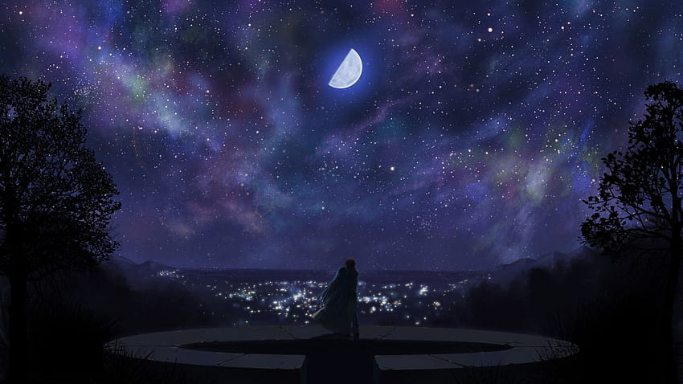
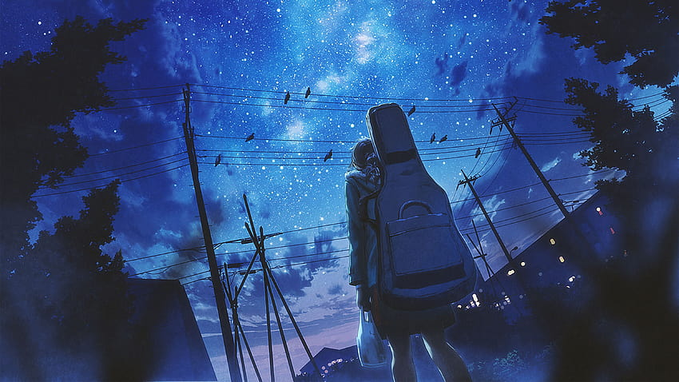
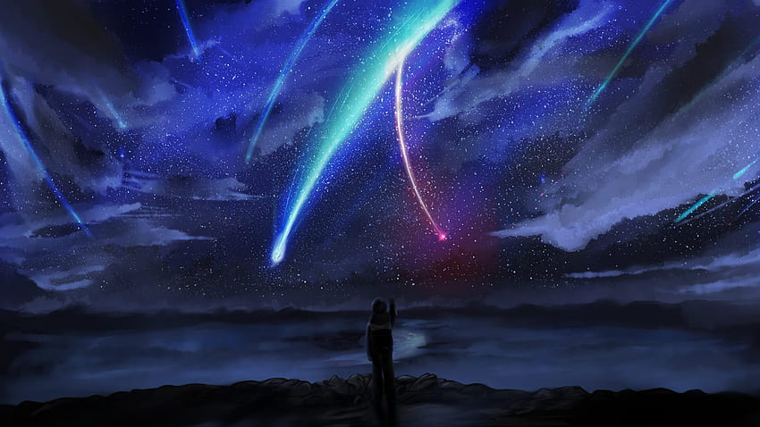

Aunque nuestro destino no sea estar juntos, aunque el destino se oponga entre nosotros, yo seré capaz de hacer hasta lo imposible para derrotarlo.
Puede que solo nos espere un oscuro camino nocturno. Pero aun así, quiero seguir adelante, creyendo que en algún momento las estrellas empezarán a iluminarlo.
En las notas tristes de la melodía, se encuentran las profundidades de la vida real, donde la música revela la capacidad única de la belleza para brotar de la tristeza y resonar en los rincones más íntimos del alma.
Incluso en los tiempos más oscuros, la esperanza se abre paso, la esperanza es la luz que nos levanta en la oscuridad.
Guíame desde el cielo, sé mi fuerza como lo eras tú. Aunque ya no estés entre nosotros, anhelo encontrar en ti el coraje y la resiliencia para seguir adelante, tal como tú solías mostrarme.
Las lágrimas son palabras que el corazón no puede decir. A veces, cuando el dolor es demasiado grande, las lágrimas fluyen silenciosamente, llevando consigo las emociones más profundas del alma.